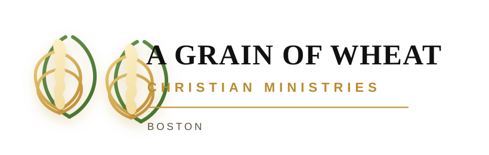

✝
Vision
To glorify God by forming a Christ-centered, Spirit-led community that bears lasting fruit through discipleship, prayer, unity, and faithful witness in Boston, New England, and beyond.

Rooted in faith. Growing in grace.
Founded in a season of prayer and obedience, we are a Christ-centered, Spirit-led ministry committed to discipleship, revival, unity, and faithful witness in Boston, New England, and beyond.

About us
The Annual Ministry Report for Congregational Meeting provides an opportunity for the members of A Grain of Wheat Christian Ministries in Boston to reflect prayerfully on God’s faithfulness, review the ministry entrusted to us over the past year, and seek the guidance of the Holy Spirit for the year ahead.
The year 2025 marked a foundational season in the life of our ministry. Though formally inaugurated mid-year, the work of prayer, preparation, and obedience preceded what God established among us. This report is offered with gratitude, humility, and hope, giving glory to God alone for all that has been accomplished.
Vision & mission
To glorify God by forming a Christ-centered, Spirit-led community that bears lasting fruit through discipleship, prayer, unity, and faithful witness in Boston, New England, and beyond.
To proclaim the Gospel of Jesus Christ in word and deed, cultivate spiritual maturity through prayer and Scripture, and equip believers to live out their faith in daily obedience.
We are committed to prayer and revival in Boston and New England, seeking not expansion for its own sake but faithfulness to Christ.
Ministry highlights
Regular corporate worship, Boston United Worship Prayer gatherings, personal prayer for revival, and a growing culture of reverence before God.
Bible-centered teaching rooted in Scripture, encouraging believers to follow Jesus in life, obedience, holiness, and spiritual maturity.
Fellowship, relationship-building, daily street evangelism, and a commitment to serve Boston and New England with integrity and faithfulness.
Sermons
Discovering a deeper prayer life rooted in intimacy with God.
Listen nowHow the promises of God transform the way we see our future.
Listen nowUpcoming events
Boston • Pre-meeting gathering
Boston • Renewal and prayer focus
Celebration of faith and obedience
Giving
Visit us
Join us for a time of prayer, worship, and biblical teaching in the heart of Boston.